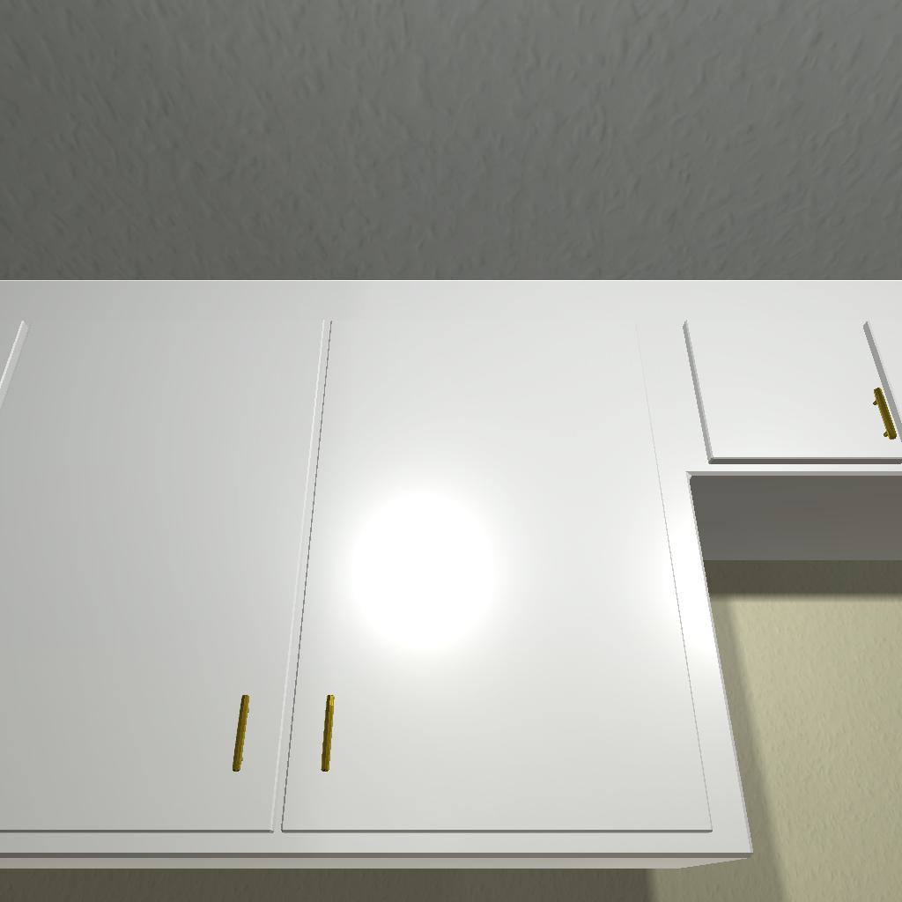
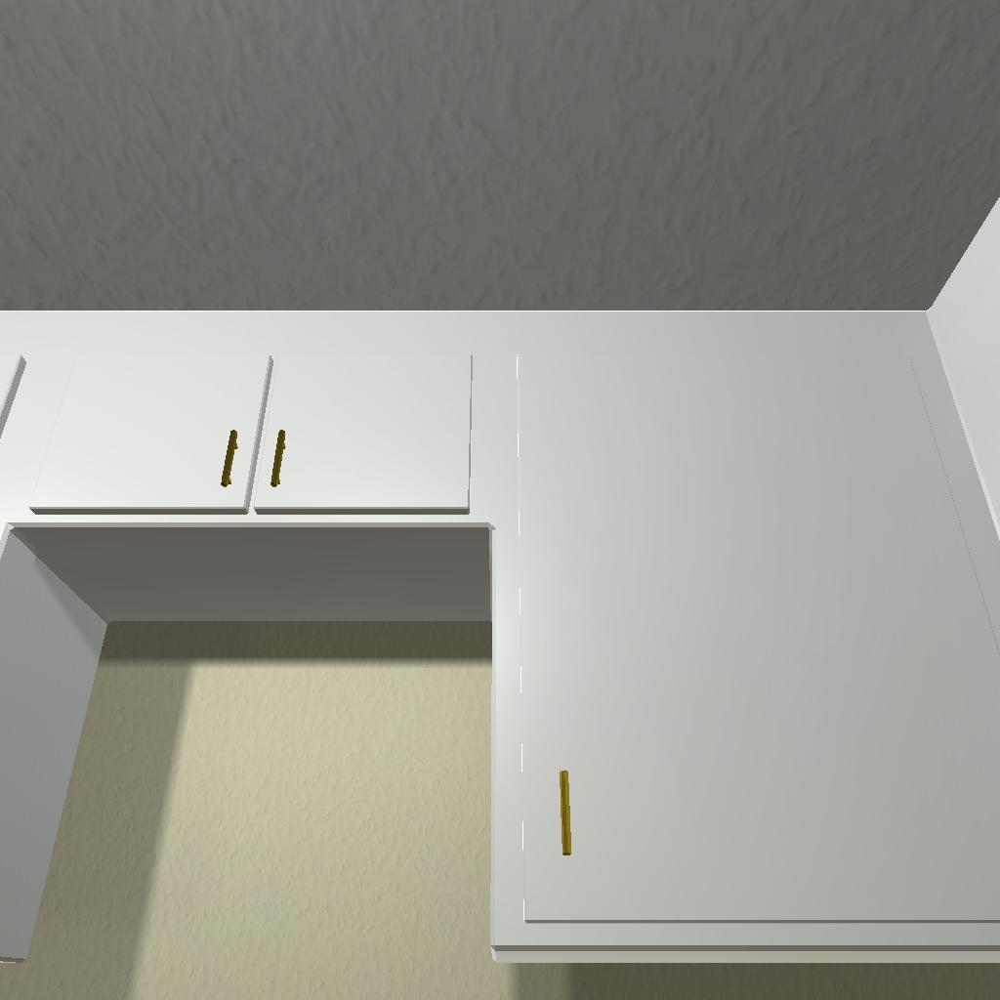

---------------------------------------------------------task: 18---------------------------------------------------------
--------------------------------------------------------------------------------------------------------------------------------------------------------------------
--------------------------------------------------------------------------------------------------------------------------------------------------------------------
Step:--------------------------------------------------------------------------9-------------------------------------------------------------------------------
----------------------------------------
VLM Prompt:
Image1:
Image2:
Image3:
**Instruction**
1. Analyze the provided images to identify all visible household objects and compare the difference between images (e.h. whether the object is opened or not and taken on hand or not), focusing on those relevant to the task description "put a cool pot in cabinet."
2. Use the analysis of images and the task hint "The agent must find an object of the desired type, pick it up, go to a fridge, cool the object with the fridge, then find the correct location to place it, and put it down there. The agent does not need to use the fridge button or open the fridge to cool the object, and the agent just needs to do action that is "cool the object with the fridge"." to answer the question: what is the most reasonable action in the choices for the task description "put a cool pot in cabinet"?
3. Decide and write the answer using the template: The answer is: (i): , where i is the real number. If there is no desired object in images, search every place based on **Initial Observation** to find the object. And if no one is exactly correct, choose a similar answer.
**Initial Observation**
You are in the middle of a room. Looking quickly around you, you can see cabinet (1-20), countertop (1-3), coffeemachine (1), toaster (1), sink (1), fridge (1), microwave (1), garbagecan (1), drawer (1-3), sinkbasin (1), stoveburner (1-4), shelf (1-3)
**Answer Choices**
(1): go to cabinet 1
(2): go to cabinet 3
(3): go to cabinet 4
(4): go to cabinet 5
(5): go to cabinet 6
(6): go to countertop 1
(7): go to coffeemachine 1
(8): go to cabinet 7
(9): go to toaster 1
(10): go to cabinet 8
(11): go to sink 1
(12): go to microwave 1
(13): go to garbagecan 1
(14): go to cabinet 9
(15): go to cabinet 10
(16): go to countertop 2
(17): go to cabinet 11
(18): go to cabinet 12
(19): go to drawer 1
(20): go to countertop 3
(21): go to drawer 2
(22): go to cabinet 13
(23): go to sinkbasin 1
(24): go to cabinet 14
(25): go to drawer 3
(26): go to stoveburner 1
(27): go to stoveburner 2
(28): go to stoveburner 3
(29): go to cabinet 15
(30): go to stoveburner 4
(31): go to cabinet 16
(32): go to cabinet 17
(33): go to cabinet 18
(34): go to cabinet 19
(35): go to cabinet 20
(36): go to shelf 1
(37): go to shelf 2
(38): go to shelf 3
(39): open cabinet 2
(40): close cabinet 2
(41): examine cabinet 2
**Answer**
Let's think step by step by following the instructions.
----------------------------------------
----------------------------------------
Original Response:
Firstly, we need to analyze the provided images to identify all visible household objects. In image 1, we can see the upper cabinets with closed doors, and the numbering is not visible, so we can't determine which cabinet numbers they are. Image 2 shows a side view with a red object that appears to be a microwave on the countertop, but again, the numbering is not visible. Image 3 shows upper cabinets similar to image 1, with closed doors and no visible numbering.
According to the task description "put a cool pot in cabinet" and the task hint, the agent must find a pot, cool it with the fridge, and then find the correct cabinet to place it in. There is no visible pot in the provided images, so we need to search every place based on the initial observation to find the object.
Since we don't have the pot on hand or in sight, we must find one. The pot could be in a cabinet, drawer, or on a countertop. Since the agent does not need to use the fridge button or open the fridge to cool the object, we can assume that as soon as the pot is found and picked up, it will be cool enough to put in the cabinet.
From the answer choices, the action that involves searching for the pot is to go to different locations like cabinets, drawers, and countertops. However, there is no action directly related to picking up a pot, cooling it, or placing it in a specific cabinet. Therefore, we must choose an action that involves searching for a pot.
The most reasonable action from the choices would be to start by searching the cabinets since pots are commonly stored there. Cabinet numbers 1-20 are given as options, but without knowing which cabinet the pot is in, we must make an educated guess.
The answer is: (1): go to cabinet 1. We start with cabinet 1 because it is the first in the sequence, and we can proceed to search other cabinets if the pot is not found there.
----------------------------------------
----------------------------------------
>>> Refine Original VLM Response and Get Pure Action: go to cabinet 1
----------------------------------------
-----------------------------------------------------------------
Running time: 64.34454298019409 seconds
Total Money: 10.925700000000003
-----------------------------------------------------------------
-----------------------------------------------------------------
Text Observation:You arrive at loc 0. The cabinet 1 is closed.
-----------------------------------------------------------------
UNSUCCEED